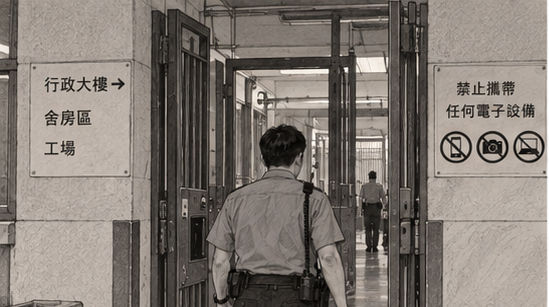
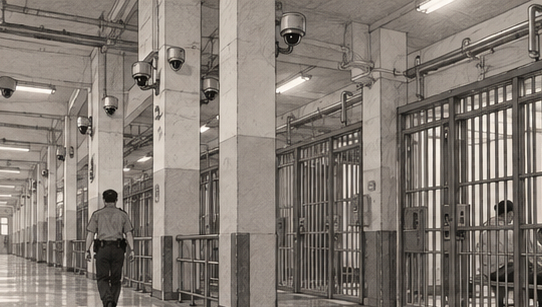
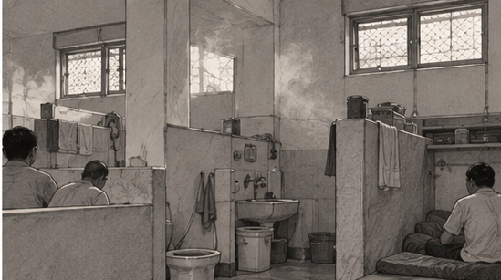
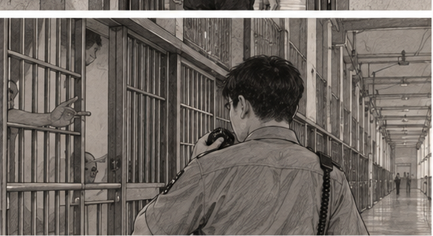
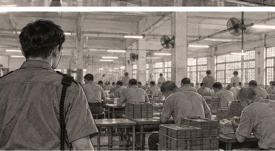
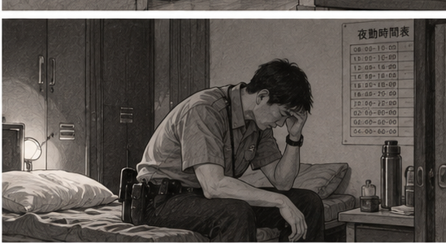
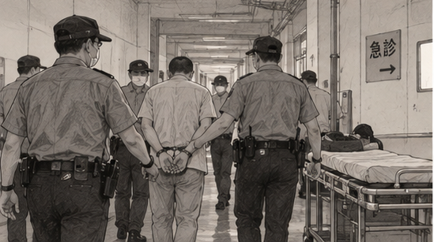
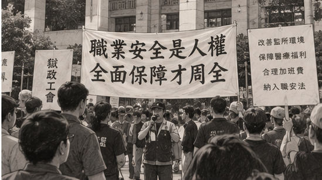

「CP值最高公務員」、「工作內容超輕鬆，畢業就有5萬起薪！」
國考補習班的宣傳文案，形塑了監所管理員資格取得不難、 輕鬆又高薪的模樣。
事實上，越來越少人想要投入這份工作。 根據《公職網》數據， 監所管理員國考一試到考人數從民國108年的2,552人， 降至民國113年的1,147人。 短短五年間，到考人數少了一半以上。
一個人要管理700名受刑人的生活， 充滿菸味和壓迫感的空間，再加上長工時與間歇性睡眠， 才是部分監所管理員真實面對的工作日常。
「監所管理員也是被關起來的人。」——監所關注小組辦公室主任 王奕蘋



進入臺北監獄，會先通過獄內的行政大樓， 穿過長廊，分別通過三道電子鎖鐵門。
不得帶入任何電子設備， 才能進到受刑人生活區， 也是監所管理員的主要工作環境——舍房與工場。
建築物內是重新粉刷過的淨白牆壁， 看似明亮開闊。
但消散不去的菸味、扣上鐵門的重響、 交錯簇擁的層層柱子， 以及抬頭隨處可見的監視器， 構成了管理員的日常工作環境。
舍房內的廁所與浴室並不是封閉空間。 離地面約兩公尺高的地方， 有一對約半版報紙大小的對外窗。
衛浴空間與床位之間， 只有遮住下半身的矮牆， 難以迴避排遺與排泄的氣味。
舍房外的監所管理員， 只能和受刑人一起承受難聞的氣味。
到了夏天，舍房內的氣溫 會比外頭至少高兩度。
氣味隨著溫度交織， 停留在酷熱的七月正午。 監所管理員必須持續待在這樣的環境裡工作。
在北部看守所擔任管理員的子嘉（化名）直言： 「環境超糟的！」

提帶接見、戒護、監視受刑人、維持獄內安全。 每一天，都必須保持警戒。
當監獄內部發生爭執或扭打， 管理員必須介入協調。 管理員吐司（化名）表示， 他任職十年間幾乎沒有遇過這類狀況， 但曾在兩、三年前遇到受刑人在工場內躁動。
有些藥物或酒精成癮的受刑人， 可能因戒斷症狀而情緒失控， 甚至毆打巡防管理員。
王奕蘋觀察，管理員也必須拿捏與受刑人的相處界線， 包括協調舍房床位、觀察受刑人之間的關係。 這些工作不只是維持秩序， 更需要細緻的判斷與溝通。

夜勤管理員從上午八點上班， 直到隔日上午八點交班。
期間雖有四至五次休息， 每次約一個半小時至三小時， 但休息時間被切割得零碎。
即使在備勤休息時間， 遇到緊急狀況仍必須第一時間協助戒護。
「有時候會睡著睡著突然驚醒，——監所管理員 宥林（化名）
忘記自己到底在哪裡。」
依據受訪管理員描述，夜勤採24小時勤務，中間安排多次休息。
下方為「勤務與休息交替」的概念示意，並非任何特定監所的實際排班表。
示意圖僅呈現分段休息的形式； 色塊長度不是實際時段或精確休息時數。
管理員亮亮（化名）坦言， 即使休假，生理狀態仍像上班一樣， 會在凌晨兩點、五點醒來。
長期分段睡眠，使管理員難以建立穩定作息。 工作中的高度警戒，也不容易在下班後立即消失。
除了身體疲勞，受刑人的情緒壓力 也經常落在管理員身上。
亮亮直言：「我們就是他（受刑人） 唯一可以抒發情緒的出口， 那對我們的身心狀況是比較壓迫的。」
宥林更曾不只一次遇到受刑人在舍房內自殺， 他感慨：「如果可以選擇的話， 我希望不要再做這種負擔人命的工作。」

2013年二代健保將受刑人納入保險對象後， 受刑人的醫療權利更受到重視。
然而在戒護人力沒有相應增加的情況下， 外醫勤務成為基層管理員額外的工作壓力。
亮亮指出，遇到緊急外醫， 其他管理員可能必須承擔 原本1.2至1.5倍的工作量。
在長期人力不足的情況下， 監所管理員的報考人數持續下降。 缺額增加，並不代表工作變得更輕鬆。
五年間，到考人數減少超過一半。
資料來源：《公職網》統計。 兩年度比較，未呈現中間年度的變化。
宥林分享，在人力不足的情況下， 曾有一名管理員獨自管理整層樓、 面對將近700名受刑人的經驗。
注意：這是受訪者描述的特定勤務情況， 並非全國平均戒護比，也不代表每名管理員 同時直接管理700人。
人
人
資料來源：《關鍵評論網》統計。
管理員不只要維持監所秩序， 還須服從主管和長官的要求。
反覆修改報告、考績與升遷壓力， 讓基層管理員即使有意見， 也不一定敢在會議上提出。
宥林曾因在監所內發聲， 使當年度考績獎金少了兩萬元。
「不是每個人的狀況都允許這樣，——監所管理員 宥林（化名）
我們不能要求每個人去做我們認為對的事。」
監所管理員具有公務人員身分， 無法比照一般勞工成立工會。 報導指出，依《公務人員協會法》， 公務人員組成協會的門檻較一般工會嚴格。
2017年成立的「台灣獄政工作權益促進會」， 是社團法人性質， 只能透過倡議向上級爭取權益。
即使參與權益討論， 管理員也可能需要額外請假， 並擔心影響考績與升遷。
國立政治大學勞工研究所教授成之約指出， 政府機關存在絕對權力關係的意識形態和文化， 使公務員難以籌組工會。
根據報導舉例，以時薪200元、 休息日加班四小時計算， 一般勞工與監所管理員的加班費存在差異。
依照一般案例製圖， 非所有加班情況的實際給付金額。
獄政工會主張， 監所管理員夜間在高風險環境工作， 應獲得深夜危勞勤務津貼， 加班費加乘機制也應比照一般勞工。

「職業安全是人權，全面保障才周全。」
獄政工會與消防、警察等基層團體， 曾在立法院群賢樓外共同倡議， 呼籲公務人員的職業安全管理 應納入一般勞工職安法的保障。
獄政工會要求改善室內抽風設施、 分流吸菸及非吸菸受刑人， 並建立空氣品質監測機制。
長期輪班與暴露在二手菸環境中， 管理員卻未必能獲得足夠的健康檢查與醫療保障。 工會因此主張積極安排健檢， 並爭取相應醫療福利。
返觀台灣公共治理協會理事長何昀峯提出， 可研議讓基層獄政人員取得 「公務人員兼勞工」的身分， 為組織工會建立法律空間。
然而，修法是否能夠推動， 政府是否願意聽見基層的聲音， 仍是未解的問題。
從悶熱的舍房、被切割的睡眠， 到難以發聲的職場文化， 監所管理員的勞動處境， 長期被關在外界難以看見的空間裡。
補習班宣傳的高薪與穩定， 並不能完整說明這份工作的代價。
獄政工會仍持續爭取基層權益， 希望改善工作環境與勞動保障。 但這些聲音能否真正進入制度， 仍取決於政府是否願意回應。